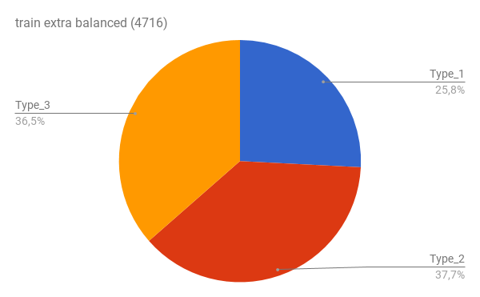
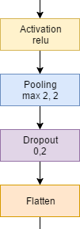
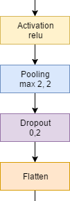

SIGE - Práctica 2
Clasificación de imágenes
Francisco Javier Bolívar Lupiáñez
Juan Pablo González Casado
fblupi.es/master_informatica-SIGE/Exploración de datos
Datos de Kaggle
- Imágenes de cérvix
- Formato: JPG
- Tamaño: 3096x4128
- Peso: 2.5 a 7.5 MB

Test
- 512 imágenes
Train
- ~1500 + ~5500 imágenes
Dataset no balanceado
Train

Dataset no balanceado
Train extra

Pre-procesamiento de datos
Imágenes que no corresponde a un cérvix

Balanceo de clases
Train extra con undersampling
Técnicas de clasificación
Learning from scratch
- Crear CNN desde cero
- Empezamos con MXNet pero pasamos a Keras
- Seguimos un kernel que habían publicado en Kaggle
Topología
 


Fine-tuning
- Utilizar como base una CNN ya entrenada
- Solo habría que añadir una capa de salida con el número de salidas que queramos
- Keras ofrece:
- Xception
- VGG16
- VGG19
- ResNet50
- InceptionV3
OVO y OVA
- One vs One (OVO)
- One vs All (OVA)
- Objetivo: Convertir problema multiclase en binario
OVO
- Construir tres clasificadores:
- 1 vs 2
- 1 vs 3
- 2 vs 3
- Combinar resultados de cada uno:
- Producto normalizado
- Media
OVA
- Construir tres clasificadores:
- 1 vs 2-3
- 2 vs 1-3
- 3 vs 1-2
- Normalizar salida
Extracción de características
- Extraer mapa de características de una CNN
- Usar técnicas clásicas de machine learning:
- Random forest
- Boosting
- Support Vector Machine (SVM)
- Podemos encontrarlas en la librería scikit-learn
Ensemblers
- Usar varios clasificadores
- CNNs
- Técnicas clásicas de machine learning
- Combinar resultados